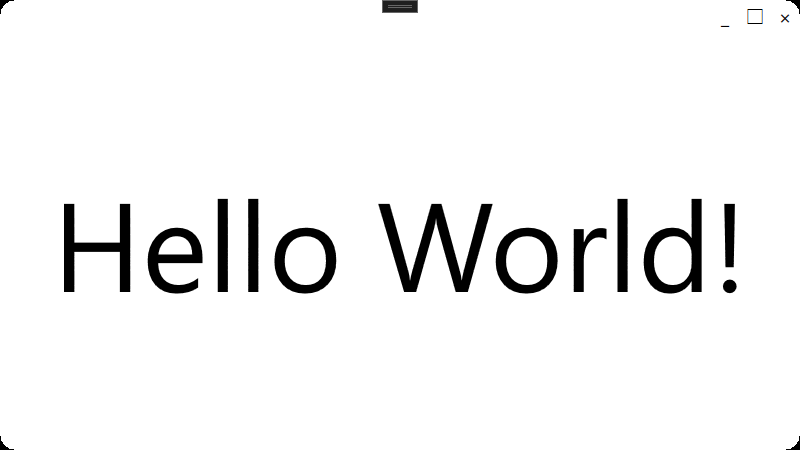

Customizing the Title Bar
This library defines two types of window classes that allow you to freely rewrite the title bar Two types of window classes are defined in this library that allow the title bar to be rewritten freely.
One is the CustomizableTitlebarWindow class. This class was created by inheriting from the Winodw class that comes standard with WPF. It can be used in almost the same way as the normal Window class, but the following three properties have been added.
- Titlebar
- CornerRadius
- ResizeBorderThickness
The other class is CustomizableTitlebarAnimatedNavigationWindow. This class is simply AnimatedNavigationWindow introduced in the document "Execute animation effects during screen transitions" with the above three properties added.
Titlebar property
The Titlebar property can be set to an object of type FrameworkElement This property is used to inscribe the contents of the titlebar.
note : If you include a clickable control such as a button inside a title bar property, be sure to attach the WindowChrome.IsHitTestVisibleInChrome attachment property to that control and set its value to True. Otherwise, even the clickable area will be recognized as an area for window movement and will not be clickable.
A simple sample code is shown below.
MainWindow.xaml
<et:CustomizableTitlebarWindow
~ellipsis~
xmlns:et="https://github.com/StdEnku/EnkuToolkit">
<et:CustomizableTitlebarWindow.Titlebar>
<StackPanel Orientation="Horizontal" HorizontalAlignment="Right">
<StackPanel.Resources>
<Style TargetType="Button">
<Setter Property="FontSize" Value="20" />
<Setter Property="Width" Value="30" />
<Setter Property="BorderBrush" Value="Transparent" />
<Setter Property="Background" Value="Transparent" />
<Setter Property="WindowChrome.IsHitTestVisibleInChrome" Value="True" />
</Style>
</StackPanel.Resources>
<Button Content="_" Click="MinimizeButtonClicked" />
<Button Content="□" Click="MaximizeOrNormalizeButtonClicked" />
<Button Content="×" Click="ShutDownButtonClicked" />
</StackPanel>
</et:CustomizableTitlebarWindow.Titlebar>
<Viewbox>
<Label Content="Hello World!" />
</Viewbox>
</et:CustomizableTitlebarWindow>
MainWindow.xaml.cs
namespace MyApp;
using EnkuToolkit.Wpf.Controls;
using System.Windows;
public partial class MainWindow : CustomizableTitlebarWindow
{
public MainWindow()
{
InitializeComponent();
}
private void MinimizeButtonClicked(object sender, RoutedEventArgs e)
{
WindowState = WindowState.Minimized;
}
private void MaximizeOrNormalizeButtonClicked(object sender, RoutedEventArgs e)
{
WindowState = WindowState == WindowState.Maximized ? WindowState.Normal : WindowState.Maximized;
}
private void ShutDownButtonClicked(object sender, RoutedEventArgs e)
{
App.Current.Shutdown();
}
}
result
CornerRadius property
This property is used to round the corners of the window. The screenshot below shows a case where 30 is specified for the CornerRadius property of the CustomizableTitlebarWindow class in the sample code above.
<et:CustomizableTitlebarWindow
~ellipsis~
CornerRadius="30"
xmlns:et="https://github.com/StdEnku/EnkuToolkit">
~ellipsis~
</et:CustomizableTitlebarWindow>

ResizeBorderThickness property
This property is used to specify the size of the area for resizing the window. If 0 is specified, the window cannot be resized with the mouse, so specify an appropriate value. The default values are as follows
- Top : 0
- Left : 15
- Right : 15
- Bottom : 15